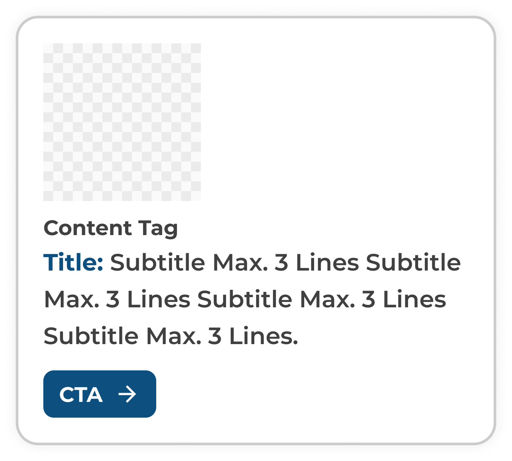

UXR: Enhancing Content discoverability on Website
Project Context
The Canadian Hispanic-Latin American Virtual Museum (CHLAVM) website limited user engagement and access to its core content:
1. Navigation & Discovery Issues – The site’s information architecture was unintuitive, with confusing menu labels and inconsistent structure, making it difficult for users to locate projects, educational resources, or exhibits.
2. Visual Clutter & Information Overload – The Embassy & Consulate page overwhelmed visitors by presenting 24+ country flags as raw icons and hyperlinks. Across the site, text-heavy layouts and outdated design further distracted from the museum’s mission.
3. Accessibility Gaps – Poor link visibility, insufficient color contrast, and limited keyboard navigation reduced inclusivity and overall usability.
The included images showcase redesigned pages -- such as the Educational Resource Hub and Embassy & Consulate section -- shared as standalone visuals due to NDA restrictions.
This was a short research sprint for a virtual museum client under NDA. The nature of this work is confidential. For the time being, please reach out for more details.
Research Methods
We employed a mixed-methods research approach to validate challenges and inform design updates:
1. Desk & Competitor Research – Compared virtual-only, hybrid, and Hispanic/Latin museums to identify structural best practices, content strategies, and navigation patterns.
2. Accessibility Audit – Applied a structured checklist to evaluate contrast, link visibility, and keyboard navigation compliance.
3. User Surveys – Captured expectations around resource discovery, navigation, and educational use.
4. Observational Interviews & Usability Tasks – Conducted one-hour Zoom sessions with exploratory observation and task-based testing to uncover user pain points in real time.
UX Research Insights
1. Confusing Navigation
Users struggled with unclear menus and redundant tabs, confirming the need for streamlined IA and intuitive pathways.
2. Outdated Design
Overloaded text blocks and obsolete layouts buried the museum’s cultural and educational mission.
3. Unclear CTAs
Users were unsure how to donate, join the community, or access resources due to vague buttons and inconsistent action flows.
4. Information Overload
Dense, unfocused content diluted key messages and made discovery frustrating.
Design Solutions
My Role & the Style Guide
As one of four UX/UI designers, I created the style guide and designed the Educational Resource Hub and Embassy & Consulate pages. These pages demonstrated how participant feedback and research insights were translated into concrete design improvements. While another teammate created the header and footer, I delivered these specific components of the design system:



Style Guide

Education and Learning
Lack of Intuitive Navigation
Problem: Resources scattered across menus, no central access.
Solution: Unified hub gathers all educational materials in one organized place.
Unclear CTAs and Interactions
Problem: Users were unsure how to access each item.
Solution: Added clear ‘Read’/‘View’ actions on each resource card, clarifying next steps.
Optimize Content Layout
Problem: Resources buried, site felt cluttered.
Solution: Only the relevant resource links appear, reducing clutter for all users.

Embassies & Consulates
Lack of Intuitive Navigation
Problem: All flags crowded on one page, tough to find correct country.
Solution: Collapsed flags into a single country dropdown; users select the country, instantly seeing relevant consulates/embassy info.
Information Overload
Problem: Too many flag links, overwhelming new visitors.
Solution: Dropdown hides non-relevant options, letting users focus only on what matters.
Optimize Content Layout
Problem: Scattered links; no visual summary.
Solution: Page now displays only the selected country's embassy or consulate links.